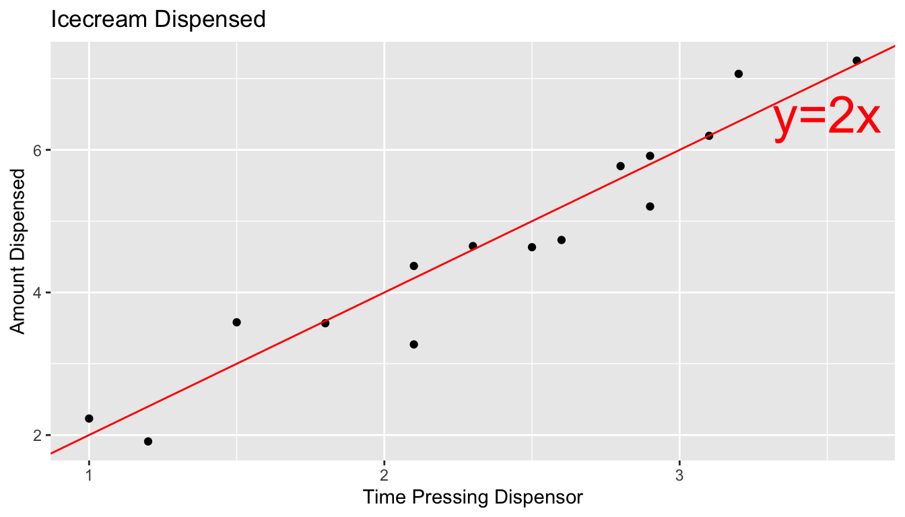

Chapter 5 Normal Error Regression Model
Learning Outcomes:
Explain when it is appropriate to use “theory-based” standard error formulas.
Interpret estimates, standard errors, test statistics, and p-values resulting from linear model output in R.
List the assumptions made in the normal error regression model.
Calculate p-values corresponding to t-statistics and F-statistics in R.
Interpret confidence intervals for an expected response, and prediction intervals, and distinguish between these two types of intervals.
Assess the whether linear model assumptions are reasonably satisfied, using residual plots, histograms, and normal QQ plots.
Explain when we should or should not expect p-values and confidence intervals obtained via “theory-based” approaches to agree with those obtained via simulation.
Identify situations where a log transformation of the response variable is appropriate.
Calculate predicted values for models involving a log transformation of the response variable.
Interpret regression coefficients in models involving a log transformation of the response variable.
Explain the regression effect.
5.1 The Normal Error Regression Model
You’ve probably noticed that many (though not all) of the distributions of statistics associated with permutation-based hypothesis tests in Chapter 3 and bootstrap confidence intervals in Chapter 4 were symmetric and bell-shaped in nature. We also saw in Section 4.4 that certain statistics, such as differences in means, and regression coefficients have known standard error formulas, allowing us to approximate their standard errors without performing simulation.
When working with statistics that have symmetric and bell-shaped distributions and know standard error formulas, it is possible to use well-known probability facts to obtain confidence intervals and perform hypothesis tests without actually performing the simulation seen in Chapters 3 and 4. In order to be able to use these facts, however, we must know that the sampling distribution of our statistic is in fact symmetric and bell-shaped. One way to know that would be to actually perform the simulations and check the shape of the distribution. This, of course, would defeat the purpose of bypassing the simulations, however.
In this chapter, we’ll examine ways to check whether a statistic such as a mean, regression slope, or expected response will follow a symmetric and bell-shaped sampling distribution, without actually having to perform a simulation. For situations where the statistic does follow such a distribution, we’ll examine methods for obtaining confidence intervals and p-values, based on probability theory, rather than simulation.
5.1.1 Example: Ice Cream Dispensor

Suppose an ice cream machine is manufactured to dispense 2 oz. of ice cream per second, on average. If 15 people used the ice cream machine, holding the dispensor for different amounts of time, and each person got exactly 2 oz. per second, the relationship between time holding the dispensor and amount dispensed would look like this:

In reality, however, the actual amount dispensed each time it is used will vary due to unknown factors like:
- force applied to dispensor
- temperature
- build-up of ice cream
- other unknown factors
Thus, if 15 real people held the dispenser and recorded the amount of ice cream they got, the scatter plot we would see would look something like this:

5.1.2 Signal and Noise
We can think of the amount of ice cream a person receives as being a result of two separate components, often referred to as signal and noise.
Signal represents the average amount of ice cream a person is expected to receive based on the amount of time holding the dispenser. In this case, signal is given by the function \(\text{Expected Amount} = 2\times\text{Time}\). Everyone who holds the dispenser for \(t\) seconds is expected to receive \(2t\) ounces of ice cream.
Noise represents how much each person’s actual amount of ice cream deviates from their expected amount. For example, a person who holds the dispenser for 1.5 seconds and receives 3.58 oz. of ice cream will have received 0.58 ounces more than expected due to noise (i.e. factors beyond time holding the dispenser).
In a statistical model, we assume that the response value of a response variable we observe is the sum of the signal, or expected response, which is a function of the explanatory variables in the model, and noise, which results from deviations due to factos beyond those accounted for in the model.
5.1.3 Normal Distribution
It is common to model noise using a symmetric, bell-shaped distribution, known as a normal distribution.

We can think of the error term as a random draw from somewhere in the area below the bell-curve. For example, in the above illustration, most of the area under the curve lies between \(-1\leq x\leq 1\). If this curve represented the noise term in the ice cream example, it would mean that most people’s actual amount of ice cream dispensed would be within \(\pm 1\) ounce of their expected amount (or signal). Notice that the normal distribution is centered at 0, indicating that on average, a person would be expected to get an amount exactly equal to their signal, but that they might deviate above or below this amount by unexplained factors, which can be modeled by random chance.
A normal distribution is defined by two parameters:
- \(\mu\) representing the center of the distribution
- \(\sigma\) representing the standard deviation
This distribution is denoted \(\mathcal{N}(\mu, \sigma)\).
When the standard deviation is small, such as for the blue curve, noise tends to be close to 0, meaning the observed values will be close to their expectation. On the other hand, the green curve, which has higher standard deviation, would often produce noise values as extreme as \(\pm 2\) or more.
Note that the square of the standard deviation \(\sigma^2\) is called the variance. Some books denote the normal distribution as \(\mathcal{N}(\mu, \sigma^2)\), instead of \(\mathcal{N}(\mu,\sigma)\). We will use the \(\mathcal{N}(\mu,\sigma)\) here, which is consistent with R.
5.1.4 Signal and Noise in Icecream Example
In this example, we’ll simulate the amount of ice cream dispensed for each person by adding a random number from a normal distribution with mean 0 and standard deviation 0.5 to the expected amount dispensed, which is given by \(2x\), where \(x\) represents time pressing the dispenser. We’ll let \(\epsilon_i\) represent the random noise term for the \(i\) person.
Thus, amount dispensed (\(Y_i\)) for person \(i\) is given by
\[Y_i = 2x_i+\epsilon_i, \text{ where } \epsilon_i\sim\mathcal{N}(0, 0.5) \]
We simulate the amount dispensed for a sample of 15 people below.
set.seed(10082020)
# set times
time <- c(1, 1.2, 1.5, 1.8, 2.1, 2.1, 2.3, 2.5, 2.6, 2.8, 2.9, 2.9, 3.1, 3.2, 3.6)
expected <- 2*time # expected amount
noise <-rnorm(15, 0, 0.5) %>% round(2) #generate noise from normal distribution
amount <- 2*time + noise # calculate observed amounts
Icecream <- data.frame(time, signal, noise, amount) # set up data table
kable((Icecream)) #display table| time | signal | noise | amount |
|---|---|---|---|
| 1.0 | 2.0 | 0.23 | 2.23 |
| 1.2 | 2.4 | -0.49 | 1.91 |
| 1.5 | 3.0 | 0.58 | 3.58 |
| 1.8 | 3.6 | -0.03 | 3.57 |
| 2.1 | 4.2 | 0.17 | 4.37 |
| 2.1 | 4.2 | -0.93 | 3.27 |
| 2.3 | 4.6 | 0.05 | 4.65 |
| 2.5 | 5.0 | -0.37 | 4.63 |
| 2.6 | 5.2 | -0.46 | 4.74 |
| 2.8 | 5.6 | 0.17 | 5.77 |
| 2.9 | 5.8 | -0.59 | 5.21 |
| 2.9 | 5.8 | 0.12 | 5.92 |
| 3.1 | 6.2 | 0.00 | 6.20 |
| 3.2 | 6.4 | 0.67 | 7.07 |
| 3.6 | 7.2 | 0.05 | 7.25 |
The scatterplot displays the amount dispensed, compared to the time pressing the dispenser. The red line indicates the line \(y=2x\). If there was no random noise, then each person’s amount dispensed would lie exactly on this line.
ggplot(data=Icecream1, aes(x=time, y=amount)) + geom_point() + ggtitle("Icecream Dispensed") + xlab("Time Pressing Dispensor") + ylab("Amount Dispensed") + geom_abline(slope=2, intercept=0, color="red") +
annotate("text", label="y=2x", x= 3.5, y=6.5, size=10, color="red")
In a real situation, we would not see the signal and noise columns in the table or the red line on the graph. We would only see the time and amount, and points on the scatter plot. From these, we would need to estimate the location of the red line by fitting a least squares regression line to the data, as we’ve done before.
The blue line represents the location of the least squares regression line fit to the time and amounts observed.
ggplot(data=Icecream1, aes(x=time, y=amount)) + geom_point() + ggtitle("Icecream Dispensed") + xlab("Time Pressing Dispensor") + ylab("Amount Dispensed") + stat_smooth(method="lm", se=FALSE) + geom_abline(slope=2, intercept=0, color="red") +
annotate("text", label="y=2x", x= 3.5, y=6.5, size=10, color="red") The blue line is close, but not identical to the red line, representing the true (usually unknown) signal.
The blue line is close, but not identical to the red line, representing the true (usually unknown) signal.
The slope and intercept of the blue line are given by:
IC_Model <- lm(data=Icecream1, lm(amount~time))
IC_Model##
## Call:
## lm(formula = lm(amount ~ time), data = Icecream1)
##
## Coefficients:
## (Intercept) time
## -0.1299 2.0312Notice that these estimates are close, but not identical to the intercept and slope of the red line, which are 0 and 2, respectively.
The equation of the red line is given by:
\(Y_i = \beta_0 + \beta_1X_{i} + \epsilon_i\), where \(\epsilon_i\sim\mathcal{N}(0,\sigma)\),
where \(Y_i\) represents amount dispensed, and \(X_i\) represents time. \(\beta_0, \beta_1,\), and \(\sigma\) are the unknown model parameters associated with the ice cream machine’s process.
Using the values of \(b_0\) and \(b_1\) obtained by fitting a model to our observed data as estimates of \(\beta_0\) and \(\beta_1\), our estimated regression equation is
\[Y_i = b_0 + b_1X_i + \epsilon_i = -0.1299087 + 2.0312489X_i + \epsilon_i \]
where \(\epsilon_i\sim\mathcal{N}(0,\sigma)\).
An estimate for \(\sigma\) is given by
\(s =\sqrt{\frac{\text{SSR}}{n-(p+1)}} = \sqrt{\frac{\displaystyle\sum_{i=1}^n(y_i-\hat{y}_i)^2}{(n-(p+1))}}\).
We calculate this estimate of \(\hat{\sigma}\), using R.
s <- sqrt(sum(IC_Model$residuals^2)/(15-2))
s## [1] 0.4527185The estimates of \(b_0 = -0.1299087\), \(b_1=2.0312489\), and \(s = 0.4527185\) are resonably close estimates to the values \(\beta_0=0, \beta_1=2\), and \(\sigma = 0.5\), that we used to generate the data.
In a real situation, we’ll have only statistics \(b_0\), \(b_1\), and \(s\), and we’ll need to use them to draw conclusions about parameters \(\beta_0=0, \beta_1=2\), and \(\sigma = 0.5\).
5.1.5 Normal Error Regression Model
In the ice cream example, the relationship between expected amount and time holding the dispenser was given by a linear equation involving a single numeric explanatory variable. We can generalize this to situations with multiple explanatory variables, which might be numeric or categorical.
Individual observations are then assumed to vary from their expectation in accordance with a normal distribution, representing random noise (or error).
The mathematical form of a normal error linear regression model is
\(Y_i = \beta_0 + \beta_1X_{i1}+ \ldots + \beta_pX_{ip} + \epsilon_i\), with \(\epsilon_i\sim\mathcal{N}(0,\sigma)\).
Note that in place of \(X_{ip}\), we could have indicators for categories, or functions of \(X_{ip}\), such as \(X_{ip}^2\), \(\text{log}(X_{ip})\), or \(\text{sin}(X_{ip})\).
The quantities \(\beta_0, \beta_1, \ldots, \beta_p\) are parameters, pertaining to the true but unknown data generating mechanism.
The estimates \(b_0, b_1, \ldots, b_p\), are statistics, calculated from our observed data.
We use confidence intervals and hypothesis tests to make statements about parameters, based on information provided by statistics.
5.1.6 Examples of Normal Error Regression Model
We can formulate all of the examples we’ve worked with so far in terms of the normal error regression model.
In the house price example, consider the following models:
Model 1: \(\text{Price}_i = \beta_0 + \beta_1\text{Sq.Ft.}_{i} + \epsilon_i\), where \(\epsilon_i\sim\mathcal{N}(0,\sigma)\). If we use this model, we’re saying that we believe the expected price of a house is a linear function of its size, and that for any given size, the distribution of actual prices are normally distributed around their expected value of \(\beta_0 + \beta_1\text{Sq.Ft.}_{i}\).
Model 2:
\(\text{Price}_i = \beta_0 + \beta_2\text{Waterfront}_{i}+ \epsilon_i\), where \(\epsilon_i\sim\mathcal{N}(0,\sigma)\).
If we use this model, we’re saying that we believe the expected price of a house depends only on whether or not it is on the waterfront, and that prices of both waterfront and non-waterfront houses follow normal distributions, though these distributions may have different means (\(\beta_0\) for non-waterfront houses, and \(\beta_1\) for waterfront houses).
Model 3:
\(\text{Price}_i = \beta_0 + \beta_1\text{Sq.Ft.}_{i}+ \beta_2\text{Waterfront}_{i}+ \beta_3\times\text{Sq.Ft.}_i\times\text{Waterfront}_{i} + \epsilon_i\), where \(\epsilon_i\sim\mathcal{N}(0,\sigma)\).
and
Model 4: \(\text{Price}_i = \beta_0 + \beta_1\text{Sq.Ft.}_{i}+ \beta_2\text{Waterfront}_{i}+ \beta_3\times\text{Sq.Ft.}_i\times\text{Waterfront}_{i} + \epsilon_i\), where \(\epsilon_i\sim\mathcal{N}(0,\sigma)\).
Both models assume that actual prices of houses with the same size and waterfront status are normally distributed, and that the mean of the normal distribution is a linear function of its size. Model 3 allows for the intercept of the lines to differ between waterfront and non-waterfront houses, while Model 4 allows both the intercept and slope to differ.
5.1.7 Implications of Normal Error Regression Model
If we really believe that data come about as the normal error regression model describes, then probability theory tells us that regression coefficients \(b_j\)’s, representing differences between categories for categorical variables and rates of change for quantitative variables, follow symmetric and bell-shaped distributions. We can use this fact, along with the standard error formulas in Section 4.4 to create confidence intervals and perform hypothesis tests, without needing to perform simulation. This is, in fact what R does in it’s model summary output.
These methods are only valid, however, if data can reasonably be thought of as having come the normal error regression model process. Thus, if we don’t believe that our observed data can be reasonably thought of terms representing underlying signal as a linear function of explanatory variables, and a normally distributed random error (or noise) term, then the confidence intervals and p-values produced by R, and other places that rely on probability-based methods will not be reliable.
5.1.8 Philosophical Question
We close the section with a philosophical question:
Do data really come about from processes like the normal error regression model? That is, do you think it is reasonable to believe that data we see in the real world (perhaps the amount of ice cream dispensed by an ice cream machine) is a combination of some true, but unknown equation involving the explanatory and response variables, and some unexplained noise, coming from a normal distribution?
We won’t attempt to answer that question here, but it is worth thinking about. After all, it is an assumption on which many frequently employed methods of statistical inference depends.
5.2 Inference in Normal Error Regression Model
When data can reasonably be assumed to have come from a process consistent with the normal error regression model, we can perform hypothesis tests and make confidence intervals for regression coefficients \(\beta_j\)’s, (which represent slopes or differences in means), using probability-based methods rather than simulation. This is done in the R output for the lm summary command.
5.2.1 lm summary Output
The summary command for a linear model in R displays a table including 4 columns.
Columns in Linear Model summary() Output
Estimate gives the least-squares estimates \(b_0, b_1, \ldots, b_p\)
Standard Error gives estimates of the standard deviation in the sampling distribution for estimate. (i.e. how much uncertainty is there about the estimate?) These are computed using the formulas in Section 4.4.
t value is the estimate divided by its standard error.
Pr(>|t|) is a p-value for the hypothesis test associated with the null hypothesis \(\beta_j = 0\), where \(\beta_j\) is the regression coefficient pertaining to the given line. Note that \(\beta_j\) is the unknown population parameter estimated by \(b_j\).
Recall our linear model for mercury levels of lakes in Northern Florida, compared to Southern Florida.
The equation of the model is:
\[ \widehat{\text{Mercury}} = \beta_0+\beta_1\times\text{South} \]
We fit the model in R and display its summary output below.
Lakes_M <- lm(data=FloridaLakes, Mercury~Location)
summary(Lakes_M)##
## Call:
## lm(formula = Mercury ~ Location, data = FloridaLakes)
##
## Residuals:
## Min 1Q Median 3Q Max
## -0.65650 -0.23455 -0.08455 0.24350 0.67545
##
## Coefficients:
## Estimate Std. Error t value Pr(>|t|)
## (Intercept) 0.42455 0.05519 7.692 0.000000000441 ***
## LocationS 0.27195 0.08985 3.027 0.00387 **
## ---
## Signif. codes: 0 '***' 0.001 '**' 0.01 '*' 0.05 '.' 0.1 ' ' 1
##
## Residual standard error: 0.3171 on 51 degrees of freedom
## Multiple R-squared: 0.1523, Adjusted R-squared: 0.1357
## F-statistic: 9.162 on 1 and 51 DF, p-value: 0.003868The estimated regression equation is
\[ \widehat{\text{Mercury}} = 0.42455+0.27195\times\text{South} \]
We’ve seen how to obtain the first two columns of the summary table, labeled “Estimate” and “Std. Error”.
The last column, labeled “Pr(>|t|)” is, in fact a p-value associated with associated with the null hypothesis that the regression parameter on that line is zero. (i.e. \(\beta_j=0\)).
Example Florida Lakes
Hypothesis Test for line (intercept)
Null Hypothesis: The average mercury level among all lakes in North Florida is 0 (\(\beta_0=0\)).
Alternative Hypothesis: The average mercury level among all lakes in Northern Florida is not 0 (\(\beta_0\neq 0\)).
We already know the average mercury level among all lakes in North Florida is not 0, so this is a silly test.
Hypothesis Test for line LocationS
Null Hypothesis: There is no difference in average mercury levels between Northern and Southern Florida (\(\beta_1=0\)).
Alternative Hypothesis: There is a difference in average mercury levels in Northern and Southern Florida (\(\beta_1\neq 0\)).
This test is relevant to us.
R does not obtain these p-values through simulation, but rather by using the symmetric and bell-shaped t-distribution to approximate the distribution of these statistics. This is appropriate when the sampling distribution for our test statistic is reasonably symmetric and bell-shaped.
You’ve probably noticed that the sampling distributions in our permutation-based hypothesis tests, and our bootstrap distributions for regression coefficients have often been roughly symmetric and bell-shaped. When this happens, we can use a symmetric and bell-shaped distribution to model the distribution of a test statistic when the null hypothesis is true, bypassing the need to use simulation.
There is statistical theory which shows that if data really do come from the normal error regression model process, like the ice cream dispenser in the previous section, then the ratio of regression coefficients (means, differences in means, slopes) divided by their standard error, will follow a symmetric bell-shaped distribution called a t-distribution.
5.2.2 t-distribution
A t-distribution is a symmetric, bell-shaped curve, with thicker tails (hence more variability), than a \(\mathcal{N}(0,1)\) distribution. The t-distribution depends on a parameter called degrees of freedom, which determines the thickness of the distribution’s tails.

For data that come from a normal error regression model, we can use a t-distribution to approximate the sampling distribution used in our hypothesis tests, when the null hypothesis is assumed to be true.
Important Fact: If \(Y_i = \beta_0 + \beta_1X_{i1}+ \ldots + \beta_pX_{ip} + \epsilon_i\), with \(\epsilon_i\sim\mathcal{N}(0,\sigma)\), then
\[ t= \frac{{b_j}}{\text{SE}(b_j)} \]
follows a t-distribution.
The \(t=\frac{{b_j}}{\text{SE}(b_j)}\) is called a t-statistic.
We’ll use this t-statistic as the test statistic in our hypothesis test.
The degrees of freedom are given by \(n-(p+1)\), where \(p\) represents the number of terms in the model, not including the intercept.
5.2.3 Difference in Means Example
Recall the hypothesis test we performed to investigate whether there is a difference in average mercury level between lakes in Northern Florida and Southern Florida.
Null Hypothesis: There is no difference in average mercury levels between Northern and Southern Florida (\(\beta_1=0\)).
Alternative Hypothesis: There is a difference in average mercury levels in Northern and Southern Florida (\(\beta_1\neq 0\)).
Test Statistic: \(t=\frac{{b_j}}{\text{SE}(b_j)} = \frac{0.27195}{0.08985} = 3.027\)
Key Question: What is the probability of getting a t-statistic as extreme as 3.027 if \(\beta_1=0\) (i.e. there is no difference in mercury levels between northern and southern lakes).
We plot the t-statistic of 3.027 that we observed in our data and observe where it lies on a t-distribution.
ts=3.027
gf_dist("t", df=51, geom = "area", fill = ~ (abs(x)< abs(ts)), show.legend=FALSE) + geom_vline(xintercept=c(ts, -ts), color="red") + xlab("t")
2*pt(-abs(ts), df=51)## [1] 0.003866374The low p-value gives us strong evidence of a difference in average mercury levels between lakes in Northern and Southern Florida.
This is the p-value reported in R’s lm summary() output.
A t-statistic more extreme than \(\pm 2\) will roughly correspond to a p-value less than 0.05.
*Comparison to Simulation
Let’s compare these results to those given by the permutation test and bootstrap confidence interval.
Permutation Test
NSLakes_SimulationResultsPlot
p-value:
b1 <- Lakes_M$coef[2] ## record value of b1 from actual data
mean(abs(NSLakes_SimulationResults$b1Sim) > abs(b1))## [1] 0.00395.2.4 Simple Linear Regression Example
We examine the model summary output for the model predicting a lake’s mercury level, using pH as the explanatory variable.
M_pH <- lm(data=FloridaLakes, Mercury~pH)
summary(M_pH)##
## Call:
## lm(formula = Mercury ~ pH, data = FloridaLakes)
##
## Residuals:
## Min 1Q Median 3Q Max
## -0.48895 -0.19188 -0.05774 0.09456 0.71134
##
## Coefficients:
## Estimate Std. Error t value Pr(>|t|)
## (Intercept) 1.53092 0.20349 7.523 0.000000000814 ***
## pH -0.15230 0.03031 -5.024 0.000006572811 ***
## ---
## Signif. codes: 0 '***' 0.001 '**' 0.01 '*' 0.05 '.' 0.1 ' ' 1
##
## Residual standard error: 0.2816 on 51 degrees of freedom
## Multiple R-squared: 0.3311, Adjusted R-squared: 0.318
## F-statistic: 25.24 on 1 and 51 DF, p-value: 0.000006573Hypothesis Test for Intercept Line
Null Hypothesis: The average mercury level among all Florida lakes with pH = 0 is 0. (\(\beta_0=0\)).
Alternative Hypothesis: The average mercury level among all Florida lakes with pH = 0 not 0. (\(\beta_0 \neq 0\)).
Since there are no lakes with pH level 0, this is not a meaningful test.
Hypothesis Test for pH Line
Null Hypothesis: There is no relationship between mercury and pH level among all Florida lakes. (\(\beta_1=0\)).
Alternative Hypothesis: There is a relationship between mercury and pH level among all Florida lakes. (\(\beta_1 \neq 0\)).
Test Statistic: \(t=\frac{{b_j}}{\text{SE}(b_j)} = \frac{-0.15230}{0.03031} = -5.024\)
ts=5.024
gf_dist("t", df=51, geom = "area", fill = ~ (abs(x)< abs(ts)), show.legend=FALSE) + geom_vline(xintercept=c(ts, -ts), color="red") + xlab("t")
2*pt(-abs(ts), df=51)## [1] 0.000006578117The p-value is extremely small, just as the simulation-based p-value we saw in Chapter 3.
5.2.5 Multiple Regression Example
We perform hypothesis tests on a model predicting house price using square feet and waterfront status as explanatory variables.
M_wf_sqft <- lm(data=Houses, price~sqft_living+waterfront)
summary(M_wf_sqft)##
## Call:
## lm(formula = price ~ sqft_living + waterfront, data = Houses)
##
## Residuals:
## Min 1Q Median 3Q Max
## -1363.79 -251.55 59.28 177.58 1599.72
##
## Coefficients:
## Estimate Std. Error t value Pr(>|t|)
## (Intercept) -407.6549 86.2868 -4.724 0.00000779668 ***
## sqft_living 0.4457 0.0353 12.626 < 0.0000000000000002 ***
## waterfrontYes 814.3613 124.8546 6.522 0.00000000313 ***
## ---
## Signif. codes: 0 '***' 0.001 '**' 0.01 '*' 0.05 '.' 0.1 ' ' 1
##
## Residual standard error: 412.7 on 97 degrees of freedom
## Multiple R-squared: 0.7607, Adjusted R-squared: 0.7558
## F-statistic: 154.2 on 2 and 97 DF, p-value: < 0.00000000000000022Intercept Line:
Null Hypothesis The average price among all non-waterfront houses with 0 square feet is 0 dollars. (\(\beta_0=0\))
This is not a sensible hypothesis to test.
sqft_living Line:
Null Hypothesis There is no relationship between price and square feet in a house, after accounting for waterfront status. (\(\beta_1=0\))
The large t-statistic (12.626) and small p-value provide strong evidence against this null hypothesis.
We know that a small p-value alone does not provide evidence of a relationship that is practically meaningful, but since our model estimates an expected 45 thousand dollar increase for each additional 100 square feet, this seems like a meaningful relationship.
waterfrontYes Line:
Null Hypothesis On average, there is no difference between average price of waterfront and non-waterfront houses, assuming they are the same size. (\(\beta_2=0\))
The large t-statistic (6.522) and small p-value provide strong evidence against this null hypothesis. Waterfront houses are estimated to cost 814 thousand dollars more, on average, than non-waterfront houses of the same size.
5.2.6 MR with Interaction Example
M_House_Int <- lm(data=Houses, price ~ sqft_living * waterfront)
summary(M_House_Int)##
## Call:
## lm(formula = price ~ sqft_living * waterfront, data = Houses)
##
## Residuals:
## Min 1Q Median 3Q Max
## -1559.34 -114.93 -30.24 131.09 1266.58
##
## Coefficients:
## Estimate Std. Error t value Pr(>|t|)
## (Intercept) 67.39594 91.39267 0.737 0.4627
## sqft_living 0.21837 0.04035 5.412 0.00000045752269 ***
## waterfrontYes -364.59498 180.75875 -2.017 0.0465 *
## sqft_living:waterfrontYes 0.43267 0.05566 7.773 0.00000000000857 ***
## ---
## Signif. codes: 0 '***' 0.001 '**' 0.01 '*' 0.05 '.' 0.1 ' ' 1
##
## Residual standard error: 325 on 96 degrees of freedom
## Multiple R-squared: 0.8531, Adjusted R-squared: 0.8486
## F-statistic: 185.9 on 3 and 96 DF, p-value: < 0.00000000000000022Intercept Line:
Null Hypothesis The average price among all non-waterfront houses with 0 square feet is 0 dollars. (\(\beta_0=0\))
This is not a sensible hypothesis to test.
sqft_living Line:
Null Hypothesis There is no relationship between price and square feet among non-waterfront houses. (\(\beta_1=0\))
The large t-statistic (5.412) and small p-value provide strong evidence against this null hypothesis.
waterfrontYes Line:
Null Hypothesis On average, there is no difference between average price of waterfront and non-waterfront houses with 0 square feet. (\(\beta_2=0\))
This is not a sensible hypothesis to test.
sqft_living:waterfrontYes
Null Hypothesis: There is no interaction between square feet and waterfront. (\(\beta_3=0\)) (That is, the effect of size on price is the same for waterfront and non-waterfront houses).
The large t-statistic (7.773) and small p-value provide strong evidence against this null hypothesis. It appears there really is evidence of an interaction between price and waterfront status, as we previously suspected, based on graphical representation and background knowledge.
Note that if the interaction term had yielded a large p-value, indicating a lack of evidence of an interaction, we might have wanted to drop the interaction term from the model, in order to make the interpretations of the other estimates and hypothesis tests simpler.
5.2.7 Limitations
We’ve seen that in situations where the sampling distribution for a regression coefficient \(b_j\) is symmetric and bell-shaped, we can create confidence intervals and perform hypothesis tests using the t-distribution without performing permutation for hypothesis tests, or bootstrapping for confidence intervals.
There are, however, limitations to this approach, which underscore the importance of the simulation-based approaches seen in Chapters 3 and 4.
These include:
There are lots of statistics, like medians and standard deviations, that do not have known standard error formulas, and do not follow symmetric bell-shaped distributions. In more advanced and complicated models, it is common to encounter statistics of interest with unknown sampling distributions. In these cases, we can estimate p-values and build confidence intervals via simulation, even if we cannot identify the distribution by name.
Even for statistics with known standard error formulas, the t-test is only appropriate when the sampling distribution for \(b_j\) is symmetric and bell-shaped. While there is probability theory that shows this will happen when the sample size is “large enough,” there is no set sample size that guarantees this. Datasets with heavier skewness in the response variable will require larger sample sizes than datasets with less skewness in the response.
The simulation-based approaches provide valuable insight to the logic behind hypothesis tests. When we permute values of an explanatory variable in a hypothesis test it is clear that we are simulating a situation where the null hypothesis is true. Likewise, when we simulate taking many samples in bootstrapping, it is clear that we are assessing the variability in a statistic across samples. Simply jumping to the t-based approximations of these distributions makes it easy to lose our sense of what they actually represent, and thus increases the likelihood of interpreting them incorrectly.
In fact prominent statistician R.A. Fisher wrote of simulation-based methods in 1936:
``Actually, the statistician does not carry out this very simple and very tedious process, but his conclusions have no justification beyond the fact that they agree with those which could have been arrived at by this elementary method.”
Fisher’s comment emphasizes the fact that probability-based tests, like the t-test are simply approximations to what we would obtain via simulation-based approaches, which were not possible in his day, but are now.
Proponents of simulation-based inference include Tim Hesterberg, Senior Statistician at Instacart, and former Senior Statistician at Google, which heavily used simulation-based tests associated with computer experiments associated with their search settings. Hesterberg wrote a 2015 paper, arguing for the use and teaching of simulation-based techniques.
We will move forward by using probability-based inference where appropriate, while understanding that we are merely approximating what we would obtain via simulation. Meanwhile, we’ll continue to employ simulation-based approaches where probability-based techniques are inappropriate or unavailable.
5.3 F-Distributions
Just as we’ve seen that the ratio of a regression statistic to its standard error follows a t-distribution when can be thought of as having come from a process that can be approximated with the normal error regression model, F-statistics also follow a known probability distribution under this assumption.
5.3.1 F-Distribution
An F distribution is a right-skewed distribution. It is defined by two parameters, \(\nu_1, \nu_2\), called numerator and denominator degrees of freedom.

Important Fact:
If \(Y_i = \beta_0 + \beta_1X_{i1} + \beta_2{X_i2} + \ldots + \beta_qX_{iq} + \epsilon_i\), with \(\epsilon_i\sim\mathcal{N}(0,\sigma)\),
and \(Y_i = \beta_0 + \beta_1X_{i1} + \beta_2{X_i2} + \ldots + \beta_qX_{iq} + \beta_{q+1}X_{i{q+1}} \ldots + \beta_pX_{ip}+ \epsilon_i\), is another proposed model, then
\[ F=\frac{\frac{\text{Unexplained Variability in Reduced Model}-\text{Unexplained Variability in Full Model}}{p-q}}{\frac{\text{Unexplained Variability in Full Model}}{n-(p+1)}} \]
follows an F-distribution.
The numerator and denominator degrees of freedom are given by \(p-q\) and \(n-(p+1)\), respectively. These are the same values we divided by when computing the F-statistic.
5.3.2 House Condition Example
Recall our F-statistic for comparing prices of houses in either very good, good, or average condition, calculated in Section 2.5.3 and the simulation-based F-test associated with this statistic that we performed in Section 3.2.5.
Null Hypothesis: There is no difference in average prices between houses of the three different conditions, among all houses in King County, WA.
Alternative Hypothesis: There is a difference in average prices between houses of the three different conditions, among all houses in King County, WA.
Reduced Model: \(\widehat{\text{Price}}= b_0\)
Full Model: \(\widehat{\text{Price}}= b_0+ b_1 \times\text{good condition}+ b_2\times\text{very good condition}\)
\[ \begin{aligned} F &= \frac{\frac{\text{SSR}_{\text{Reduced}}-\text{SSR}_{\text{Full}}}{p-q}}{\frac{\text{SSR}_{\text{Full}}}{n-(p+1)}} \\ &=\frac{\frac{69,045,634-68,195,387}{2-0}}{\frac{68,195,387}{100-(2+1)}} \\ \end{aligned} \]
((SST - SSR_cond)/(2-0))/(SSR_cond/(100-(2+1)))## [1] 0.6046888The results of the simulation-based hypothesis test are shown below.
House_Cond_SimulationResults_Plot
simulation-based p-value:
mean(FSim > Fstat)## [1] 0.5568Now, we calculate the p-value using the probability-based F-distribution.
ts=0.605
gf_dist("f", df1=2, df2=97, geom = "area", fill = ~ (abs(x)< abs(ts)), show.legend=FALSE) + geom_vline(xintercept=c(ts), color="red") + xlab("F")
p-value:
1-pf(ts, df1=2, df2=97)## [1] 0.5481219The p-value we obtained is very similar to the one we obtained using the simulation-based test.
We can obtain this p-value directly using the anova command.
M_cond <- lm(data=Houses, price ~ condition)
M0 <- lm(data=Houses, price ~ 1)
anova(M0, M_cond)## Analysis of Variance Table
##
## Model 1: price ~ 1
## Model 2: price ~ condition
## Res.Df RSS Df Sum of Sq F Pr(>F)
## 1 99 69045634
## 2 97 68195387 2 850247 0.6047 0.54835.3.3 Interaction Example
We can also use an F-test to compare a model predicting house prices with an interaction term to one without one.
Reduced Model: \(\widehat{\text{Price}}= b_0+ b_1 \times\text{sqft_living} + b_2\times\text{Waterfront}\)
Full Model: \(\widehat{\text{Price}}= b_0+ b_1 \times\text{sqft_living}+ b_2\times\text{Waterfront} + b_3\times\text{sqft_living}\times\text{Waterfront}\)
\[ \begin{aligned} F &= \frac{\frac{\text{SSR}_{\text{Reduced}}-\text{SSR}_{\text{Full}}}{p-q}}{\frac{\text{SSR}_{\text{Full}}}{n-(p+1)}} \\ &=\frac{\frac{16,521,296-10,139,974}{3-2}}{\frac{10,139,974}{100-(3+1)}} \\ \end{aligned} \]
((SSR_wf_sqft-SSR_int)/(3-2))/((SSR_int)/(100-(3+1)))## [1] 60.41505ts=60.41505
gf_dist("f", df1=1, df2=96, geom = "area", fill = ~ (abs(x)>! abs(ts)), show.legend=FALSE) + geom_vline(xintercept=c(ts), color="red") + xlab("F")
p-value:
1-pf(ts, df1=1, df2=96)## [1] 0.000000000008572476The probability-based F-test is used in the anova command.
M_wf_SqFt <- lm(data=Houses, price~sqft_living + waterfront)
M_House_Int <- lm(data=Houses, price~sqft_living * waterfront)
anova(M_wf_SqFt, M_House_Int)## Analysis of Variance Table
##
## Model 1: price ~ sqft_living + waterfront
## Model 2: price ~ sqft_living * waterfront
## Res.Df RSS Df Sum of Sq F Pr(>F)
## 1 97 16521296
## 2 96 10139974 1 6381323 60.415 0.000000000008572 ***
## ---
## Signif. codes: 0 '***' 0.001 '**' 0.01 '*' 0.05 '.' 0.1 ' ' 1Notice that this p-value is identical to the one we obtained in the previous section, using the lm command.
5.4 Regression Model Assumptions
5.4.1 Regression Assumptions
Let’s think carefully about what we are assuming in order to use the hypothesis tests and confidence intervals associated with the normal error regression model.
The statement \(Y_i = \beta_0 + \beta_1X_{i1}+ \ldots + \beta_pX_{ip} + \epsilon_i\), with \(\epsilon_i\sim\mathcal{N}(0,\sigma)\) implies the following:
Linearity: the expected value of \(Y\) is a linear function of \(X_1, X_2, \ldots, X_p\). (This assumption is only relevent for models including at least one quantitative explanatory variable.)
Normality: Given the values of \(X_1, X_2, \ldots, X_p\), \(Y\) follows a normal distribution.
Constant Variance: Regardless of the values of \(X_1, X_2, \ldots, X_p\), the variance (or standard deviation) in the normal distribution for \(Y\) is the same.
Independence: each observation is independent of the rest.
Illustration of Model Assumptions

We know that these assumptions held true in the ice cream example, because we generated the data in a way that was consistent with these.
In practice, we will have only the data, without knowing the exact mechanism that produced it. We should only rely on the t-distribution based p-values and confidence intervals in the R output if these appear to be reasonable assumptions.
Of course, these assumptions will almost never be truly satisfied, but they should at least be a reasonable approximation if we are to draw meaningful conclusions.
5.4.2 Checking Model Assumptions
The following plots are useful when assessing the appropriateness of the normal error regression model.
Scatterplot of residuals against predicted values
Histogram of standardized residuals
- heavy skewness indicates a problem with normality assumption
Normal quantile plot
- severe departures from diagonal line indicate problem with normality assumption
Residual vs Predicted Plots
A residual vs predicted plot is useful for detecting issues with the linearity or constant variance assumption.
- curvature indicates a problem with linearity assumption
- “funnel” or “megaphone” shape indicates problem with constant variance assumption
P1 <- ggplot(data=Violations, aes(y=no_viol_Model$residuals, x=no_viol_Model$fitted.values)) + geom_point() + ggtitle("No Violation") + xlab("Predicted Values") + ylab("Residuals")
P2 <- ggplot(data=Violations, aes(y=lin_viol_Model$residuals, x=no_viol_Model$fitted.values)) + geom_point() + ggtitle("Violation of Linearity Assumption")+ xlab("Predicted Values") + ylab("Residuals")
P3 <- ggplot(data=Violations, aes(y=cvar_viol_Model$residuals, x=no_viol_Model$fitted.values)) + geom_point() + ggtitle("Violation of Constant Variance Assumption")+ xlab("Predicted Values") + ylab("Residuals")
grid.arrange(P1, P2, P3, ncol=3)
If there is only one explanatory variable, plotting the residuals against that variable reveals the same information as a residual vs predicted plot.
Histogram of Residuals
A histogram of the residuals is useful for assessing the normality assumption.
- Severe skewness indicates violation of normality assumption
P1 <- ggplot(data=Violations, aes(x=no_viol_Model$residuals)) + geom_histogram() + ggtitle("No Violation") +xlab("Residual")
P2 <- ggplot(data=Violations, aes(x=norm_viol_Model$residuals)) + geom_histogram() + ggtitle("Violation of Normality Assumption") + xlab("Residual")
grid.arrange(P1, P2, ncol=2)Normal Quantile-Quantile (QQ) Plot
Sometimes histograms can be inconclusive, especially when sample size is smaller.
A Normal quantile-quantile plot displays quantiles of the residuals against the expected quantiles of a normal distribution.
- Severe departures from diagonal line indicate a problem with normality assumption.
P1 <- ggplot(data=Violations, aes(sample = scale(no_viol_Model$residuals))) + stat_qq() + stat_qq_line() + xlab("Normal Quantiles") + ylab("Residual Quantiles") + ggtitle("No Violation") + xlim(c(-4,4)) + ylim(c(-4,4))
P2 <- ggplot(data=Violations, aes(sample = scale(norm_viol_Model$residuals))) + stat_qq() + stat_qq_line() + xlab("Normal Quantiles") + ylab("Residual Quantiles") + ggtitle("Violation of Normality Assumption") + xlim(c(-4,4)) + ylim(c(-4,4))
grid.arrange(P1, P2, ncol=2)
Checking Model Assumptions - Independence
Independence is often difficult to assess through plots of data, but it is important to think about whether there were factors in the data collection that would cause some observations to be more highly correlated than others.
For example:
- People in the study who are related.
- Some plants grown in the same greenhouse and others in different greenhouses.
- Some observations taken in same time period and others at different times.
All of these require more complicated models that account for correlation using spatial and time structure.
5.4.3 Summary of Checks for Model Assumptions
| Model assumption | How to detect violation |
|---|---|
| Linearity | Curvature in residual plot |
| Constant Variance | Funnel shape in residual plot |
| Normality | Skewness in histogram of residuals or departure from diag. line in QQ plot |
| Independence | No graphical check, carefully examine data collection |
5.4.4 Example: N v S Lakes
Recall our sample of 53 Florida Lakes, 33 in the north, and 20 in the south.
\(\text{Mercury}_i = \beta_0 + \beta_1\times\text{I}_{\text{South}_i} + \epsilon_i\), where \(\epsilon_i\sim\mathcal{N}(0, \sigma)\).
LakesBPWhen we use the normal error regression model, we are assuming the following:
Linearity: there is an expected mercury concentration for lakes in North Florida, and another for lakes in South Florida.
Normality: mercury concentrations of individual lakes in the north are normally distributed, and so are mercury concentrations in the south. These normal distributions might have different means.
Constant Variance: the normal distribution for mercury concentrations in North Florida has the same standard deviation as the normal distribution for mercury concentrations in South Florida
Independence: no two lakes are any more alike than any others, except for being in the north or south, which we account for in the model. We might have concerns about this, do to some lakes being geographically closer to each other than others.
We should only use the p-values and confidence intervals provided by R, which depend on the t-distribution approximation, if we believe these assumptions are reasonable.
A residual by predicted plot, histogram of residuals, and normal quantile-quantile plot are shown below.
P1 <- ggplot(data=FloridaLakes, aes(y=Lakes_M$residuals, x=Lakes_M$fitted.values)) + geom_point() + ggtitle("Residual vs Predicted Plot") + xlab("Predicted Values") + ylab("Residuals")
P2 <- ggplot(data=FloridaLakes, aes(x=Lakes_M$residuals)) + geom_histogram() + ggtitle("Histogram of Residuals") + xlab("Residual")
P3 <- ggplot(data=FloridaLakes, aes(sample = scale(Lakes_M$residuals))) + stat_qq() + stat_qq_line() + xlab("Normal Quantiles") + ylab("Residual Quantiles") + ggtitle("Normal QQ Plot")
grid.arrange(P1, P2, P3, ncol=3)Notice that we see two lines of predicted values and residuals. This makes sense since all lakes in North Florida will have the same predicted value, as will all lakes in Southern Florida.
There appears to be a little more variability in residuals for Southern Florida (on the right), than Northern Florida, causing some concern about the constant variance assumption.
Overall, though, the assumptions seem mostly reasonable.
We shouldn’t be concerned about using theory-based hypothesis tests or confidence intervals for the mean mercury level or difference in mean mercury levels. There might be some concern that prediction intervals could be either too wide or too narrow, but this is not a major concern, since the constant variance assumption is not severe.
5.4.5 Example: pH Model
Recall the regression line estimating the relationship between a lake’s mercury level and pH.
\(\text{Mercury}_i = \beta_0 + \beta_1\times\text{pH}_i + \epsilon_i\), where \(\epsilon_i\sim\mathcal{N}(0, \sigma)\).
The model assumes:
Linearity: the expected mercury level of a lake is a linear function of pH.
Normality: for any given pH, the mercury levels of lakes with that pH follow a normal distribution. For example, mercury levels for lakes with pH of 6 is are normally distributed, and mercury levels for lakes with pH of 9 are normally distributed, though these normal distributions may have different means.
Constant Variance: the variance (or standard deviation) in the normal distribution for mercury level is the same for each pH. For example, there is the same amount of variability associated with lakes with pH level 6, as pH level 8.
Independence: no two lakes are any more alike than any others, except with respect to pH, which is accounted for in the model. This may not be a reasonable assumption, but it’s unclear what the effects of such a violation would be.
We should only use the p-values and confidence intervals provided by R, which depend on the t-distribution approximation, if we believe these assumptions are reasonable.
The plots for checking these assumptions are shown below.
P1 <- ggplot(data=FloridaLakes, aes(y=M_pH$residuals, x=M_pH$fitted.values)) + geom_point() + ggtitle("Residual vs Predicted Plot") + xlab("Predicted Values") + ylab("Residuals")
P2 <- ggplot(data=FloridaLakes, aes(x=M_pH$residuals)) + geom_histogram() + ggtitle("Histogram of Residuals") + xlab("Residual")
P3 <- ggplot(data=FloridaLakes, aes(sample = scale(M_pH$residuals))) + stat_qq() + stat_qq_line() + xlab("Normal Quantiles") + ylab("Residual Quantiles") + ggtitle("Normal QQ Plot")
grid.arrange(P1, P2, P3, ncol=3)The residual vs predicted plot does not show any linear trend, and variability appears to be about the same for low predicted values as for high ones. Thus, the linearity and constant variance assumptions appear reasonable.
The histogram shows some right-skewness, and the right-most points on the normal-qq plot are above the line, indicating a possible concern with the normality assumption. There is some evidence of right-skewness, which might impact the appropriatness of the normal error regression model.
Nevertheless, we obtained similar results using the simulation-based results as the normal error regression model, suggesting that the concern about normality did not have much impact on the estimation of \(\beta_1\). It is possible that this concern could have implications for other kinds of inference, such as confidence intervals for an expected response, and prediction intervals, which we’ll explore later in the chapter.
5.4.6 Example: House Prices
Recall the model for estimating price of a house, using size, waterfront status, and an interaction term.
\(\text{Price}_i = \beta_0 + \beta_1\text{Sq.Ft.}_{i}+ \beta_2\text{Waterfront}_{i}+ \beta_3\times\text{Sq.Ft.}_i\times\text{Waterfront}_{i} + \epsilon_i\), where \(\epsilon_i\sim\mathcal{N}(0,\sigma)\).
The model assumes:
Linearity: the expected price of a house is a linear function of its size. The slope and intercept of this function may be different for houses on the waterfront, compared to houses not on the waterfront.
Normality: prices of houses of a given size and waterfront status are normally distributed.
Constant Variance: the variance (or standard deviation) in the normal distribution for prices is the same for all sizes and waterfront statuses.
Independence: no two houses are any more alike than any others, except with respect to size and waterfront status.
We should only use the p-values and confidence intervals provided by R, which depend on the t-distribution approximation, if we believe these assumptions are reasonable.
Several reasons come to mind that might cause us to doubt the validity of these assumptions, but let’s investigate them emperically, using our data on 100 houses.
The plots for checking these assumptions are shown below.
P1 <- ggplot(data=Houses, aes(y=M_House_Int$residuals, x=M_House_Int$fitted.values)) + geom_point() + ggtitle("Residual vs Predicted Plot") + xlab("Predicted Values") + ylab("Residuals")
P2 <- ggplot(data=Houses, aes(x=M_House_Int$residuals)) + geom_histogram() + ggtitle("Histogram of Residuals") + xlab("Residual")
P3 <- ggplot(data=Houses, aes(sample = scale(M_House_Int$residuals))) + stat_qq() + stat_qq_line() + xlab("Normal Quantiles") + ylab("Residual Quantiles") + ggtitle("Normal QQ Plot")
grid.arrange(P1, P2, P3, ncol=3)
Although we might have had some initial concerns about the model assumptions, the plots do not raise any serious concerns. There is no sign of a nonlinear relationship in the residual vs predicted plot, so the linearity assumption appears reasonable.
There is possibly more variability associated with prices or more expensive houses than less expensive ones, so we might have some concerns about constant variance, but since there are only a few very high-priced houses, and the increasing variance is not too severe, this may not be much of a concern.
There are a few houses on each end of the normal qq plot that deviate from their expected line, but not very many. It’s not uncommon to have a few points deviate from the line on the end, so we do not have severe concerns about normality. The histogram of residuals is roughly symmetric.
Thus, the normal error regression model appears to be reasonable for these data.
5.4.7 General Comments on Model Assumptions
We shouldn’t think about model assumptions being satisfied as a yes/no question.
In reality assumptions are never perfectly satisfied, so it’s a question of how severe violations must be in order to impact results. This is context dependent.
A model might be reasonable for certain purposes (i.e. confidence interval for \(\beta_1\)) but not for others that we’ll see soon (i.e. prediction of response value for new observation).
When model assumptions are a concern, consider a using a transformation of the data or a more flexible technique, such as a nonparametric method or statistical machine learning algorithm. We’ll talk more about these soon.
Remember that all statistical techniques are approximations